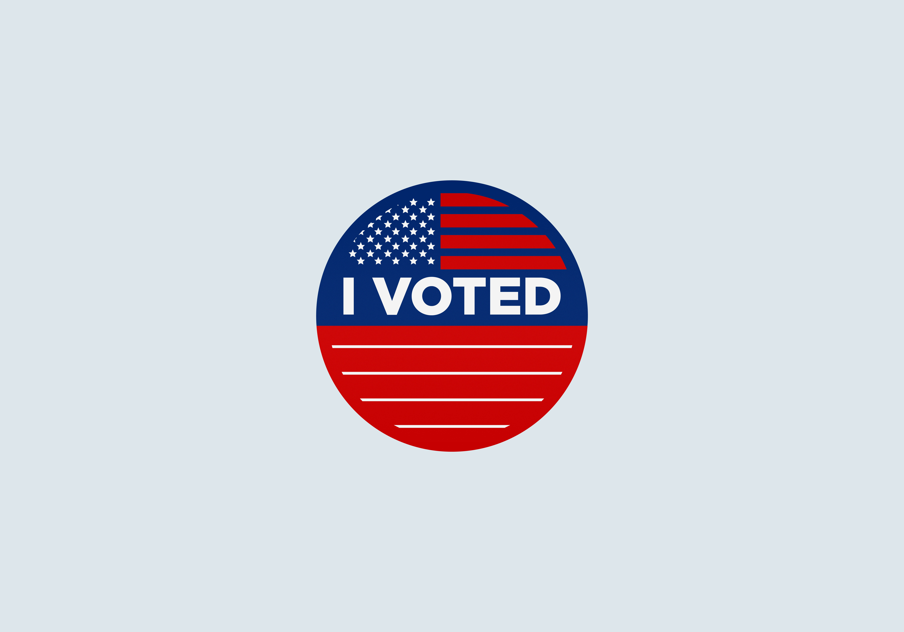

THE HISTORY OF SWING STATES
By: Amanda Cash
The first presidential election between Democrats and Republicans was in 1856 between Democratic candidate James Buchanan and Republican John C. Fremont. Since civil war times, there has been the idea of “swing states.” A swing state is any state that can be won by either a Democratic or Republican presidential candidate by a "swing" in votes. These states are sometimes referred to as battleground or purple states.
Swing states are not always consistent. These states change based on the demographics and shifting ideologies within them.
There are two components of a presidential election:
the electoral college and the popular vote.

The Electoral College was created by the Founding Fathers as a compromise to whether citizens should vote or to allow Congress to select a leader. It is comprised of 538 electors which is the total number of the House of Representatives, Senators and three elctors for Washington, D.C.). There needs to be 270 votes to win the presidency. If for some reason neither candidate receives 270 votes, then the election is sent to the House of Represetnatives for a vote.In every state but two (Nebraska and Maine), the candidate who wins the majority of votes, wins the total number of electoral votes. In Nebraska and Maine, voters are assigned by proportional representation. Electors are state-elected officials, party leaders or people with strong affiliation with Presidential cancidates. The Electoral College determines the President and Vice President of the United States
The Popular Vote is the total number of all votes in the states and Washington, D.C. Typically the president wins both the popular vote and the electoral vote but not always the case. There have been 5 presidential elections where the president elect lost
the popular vote: 1824, 1876, 1888, 2000 and 2016
SWING STATES THROUGHOUT HISTORY
With Their District Court Regions
Arizona
Colorado
Florida
Georgia
Iowa
Michigan
Minnesota
Nevada
New Hampshire
North Carolina
Ohio
Pennsylvania
Virginia
Wisconsin
38/50 STATES HAVE VOTED FOR THE SAME PARTY IN THE 2000-2016
PRESIDENTIAL ELECTIONS
ELECTORAL VOTES AS OF 2020
Colors Based on Party Leanings in the Last 12 Elections
MAJOR ELECTIONS WITH SWING STATES
1960: John F. Kennedy v. Richard Nixon
35th President: John F. Kennedy
Election Day: Tuesday November 8, 1960
This election was one of the closest presidential elections in United States history. This was the first election where all fifty states voted because Alaska and Hawaii became states during this election cycle. Although the 50 states voted, the District of Columbia did not participate in this election. This was also the first election where Kennedy received most of the electoral votes while the Nixon took most of the states. The key issues during this time were Sputnik and the Race to Space between the United States and "the Soviet Union."
This election cycle featured the new concept of televised debates. Candidates benefitted from the idea of "free media." John F. Kennedy was a junior U.S. Massachusetts Senator and the Democrat front-runner. Vice President Richard Nixon was the Republican front-runner. Kennedy received votes from many who were upset by the Republican Party’s handling of the economic recession of 1957-1958. Kennedy was also the first Roman Catholic president which gained him new Catholic votes. He is the youngest person ever to be elected as President. Kennedy’s campaign skills concentrated on swing states which allowed him to gain essential electoral votes. Nixon on the other hand, campaigned in all 50 states.
Kennedy won 49.7 percent of the popular vote and Nixon won 49.5 percent out of more than 68 million votes cast. Kennedy earned 112,827 votes more than Nixon. The key states that in this election that had slim margins were Illinois and Texas. Kennedy was only 43 years old and was the youngest person elected to be president.
1968: Richard Nixon v. Hubert H. Humphrey
37th President: Richard Nixon
Election Day: Tuesday November 5th, 1968
This election occurred during a time of deep division within the country. The Republican nominee was former vice president Richard Nixon. He defeated the Democratic nominee, incumbent vice president Hubert Humphrey. The election year's key issues were the assassinations of Martin Luther King Jr. and Robert F. Kennedy. There were also mass protests and opposition to the Vietnam War and the Tet Offensive which were both occurring during the election cycle. Protests across the country were occurring at universities and colleges. There were also violent police relations and confrontations with the public. Richard Nixon’s campaign promised “law and order” across the nation.
This was the first presidential election after the passage of the Voting Rights Act of 1965. This act allowed for “mass enfranchisement of racial minorities throughout the country, especially in the South."
Nixon won the popular vote by a lead of 812,415 votes.but won a large portion of the Electoral College. Nixon became the first non-incumbent vice president to be elected president. This election is also attributed to brekaing the New Deal Coalition which was a collection of interest groups and organizations that supported the New Deal. The coalition had been popular in presidential politics for 36 years. Nixon would win reelection in 1972 but would leave office in 1974 because of the Watergate scandal.
1976: Jimmy Carter v. Gerald Ford
39th President: President Jimmy Carter
Election Day: Tuesday November 2nd, 1976
Democrat Jimmy Carter who was once the governor of Georgia, defeated the incumbent Republican President Gerald Ford from Michigan. Ford became president after Nixon stepped down in the Watergate scandal. He was the first president to take office without being elected.
The two candidates had vastly different ideals on how to campaign. Carter focused on the fact that he was an outsider from Washington politics while Ford pushed the idea of a “Rose Garden strategy.” He wanted to show the American people he was an experienced leader and prepared official to be the president. Carter was thought to be politically weak amongst the nation but he played to his strength of being a naval officer and agribusinessman. He also played on the idea of "trust." This idea was much needed because many within the United States because many had lost trust during the Watergate scandal and the Vietnam War.
The issues of the day that put Ford in a poor position were the poor economy, the fall of South Vietnam and his unpopular pardon of Nixon. During this time period, many southern Democrats were shifting to the Republican Party. Carter won the popular vote by over 1.6 million votes and gained 57 more electoral votes.
2000: George W. Bush v. Al Gore
43rd President: George W. Bush
Election Day: Tuesday November 7th, 2000
Republican George W. Bush who was the governor of Texas, defeated Democratic nominee Al Gore who was the incumbent vice president. This was the fourth out of five presidential elections where the winning candidate lost the popular vote. This election is considered the closest in U.S. history. The election came down to who won the 25 electoral vote in Florida.
George W. Bush was the oldest son of former 41st president George H. W. Bush. Candidates focused on issues across the nation such as budget, tax relief, reforms for federal social insurance programs and presidential ethics. Impeachment and presidential ethics were hot topics because the election was coming off of Bill Clinton’s impeachment.
Florida state law requires a recount due to the fact that the votes were so close.A series of legal battles between Bush and Gore ensued. They eventually led to the Supreme Court case Bush v. Gore. The Justices voted 5-4 in favor of Bush and ended the recount in Florida. Bush won Florida by 537 votes and a margin of less than 1 percent (0.0009%).
Gore won 540,520 more popular votes than Bush but Bush won five more electoral votes, making him the 43rd president of the United States. Bush won 11 key states that voted previously Democrat in the 1996 election.
2004: George W. Bush v. John F. Kerry
43rd President: President George W. Bush
Election Day: Tuesday November 2nd, 2004
The incumbent Republican President George W. Bush defeated the Democratic Senator from Massachusetts, John Kerry. Since 1988, this is the only presidential election where the Republican candidate won the popular vote.
Despite Bush gaining popularity after his response to the terrorist attacks on September 11th, 2001, his popularity declined significantly between 2001 and 2004. A major issue at the time was foreign policy. Some of his foreign policy issues included War on Terrorism and the 2003 Invasion of Iraq There were several domestic issues that were major talking points during this election such as the economy, health care, abortion, same-sex marriage and stem cell research.
Bush won by a 35 electoral votes and took 50.7% of the popular vote. He was the first candidate since 1988 election to win over 50% of the popular vote as well as to win the overall vote. He won over 3 million more votes than Kerry. His victory was the first time that major party nominee won a presidential election without winning any electoral votes from the Northeast.
2016: Donald Trump v. Hillary Clinton
45th President: Donald Trump
Election Day: Tuesday November 8th, 2016
Donald Trump was the Republican nominee who defeated former Secretary of State and first lady, Democrat Hillary Clinton. Trump is the oldest person to be inaugurated as president. The election is the fifth and most recent election where the winning candidate lost the popular vote.
Trump campaigned in opposition of illegal immigration and free-trade agreements. Clinton advocated for President Obama’s policies such as Obamacare, LGBTQ rights, women’s rights, racial rights and inclusive capitalism.
Trump’s character was damaged by his remarks in and about the media, sexual misconduct allegations, and business handling. Clinton’s image was damaged by her ethics and trustworthiness regarding using a private email server for government business. Major issues in this election were immigration, health care, inequality, terrorism, gun control and foreign policy.
Clinton led in nearly every pre-election nationwide poll and in most swing state polls. Trump won 77 more electoral vote but Clinton won over 2.5 million more votes for the popular vote. Trump won 6 out of at the time 10 competitive swing states. He is the first president without public service or military experience.
The election was also, concluded by the U.S. government intelligence agencies, interfered with by Russia. It was discovered the interference swayed to favor Trump’s campaign.
2020: Donald Trump v. Joe Biden
46th President: President President Joe Biden
Election Day: Tuesday November 3rd, 2020
The Democrat nominee was former president Joe Biden who defeated Republican incumbent President Donald Trump.
Trump was the first president since 1992 to fail to win re-election to a second term. The 2020 election saw the highest voter turnout since 1900. Biden received the most votes ever cast for a candidate in a United States presidential election with 78 million votes being cast for the candidate.
Biden’s running mate, Kamala Harris who is a Senator from California, is the first African-American, first Asian-American and first female vice president elect.
The issues of this debate were the Covid-19 pandemic, civil unrest, race inequality, police brutality, the confirmation of Supreme Court justices and the Affordable Care Act.
With the Covid-19 pandemic, the election had a record number of ballots cast early and by mail. Some swing states delayed vote counting and reporting from the large amount of mail in ballots cast which led to major news outlets delaying the president elect announcement until November 7th.
The votes of the Electoral college for president and vice president are scheduled to be formally cast by the presidential electors on December 14th, 2020 and officially counted by Congress on January 6th, 2021.
There have only been 5 elections where the popular vote winner was defeated:
1824, 1876, 1888, 2000, 2016

REASONS WHY STATES SWING
There are several reasons for why states swing during presidential elections such as voter registration divided within state between Republicans and Democrats, large numbers of swing voters-vote based on individual v. Party, urban areas tend to vote Democrat and rural areas Republican; moving areas alters the balance between parties in state's Ideological polarization.
WHO CARES ABOUT SWING STATES?
Everyone should! Especially in recent years- swing states have determined the presidency. Your vote is represented by the electoral college so your vote matters! Get out there and vote! And don’t forget that Congressional elections are just as important as presidential elections. Vote every chance you can. Your vote makes a difference!
